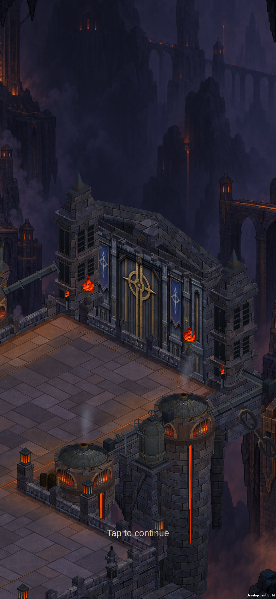
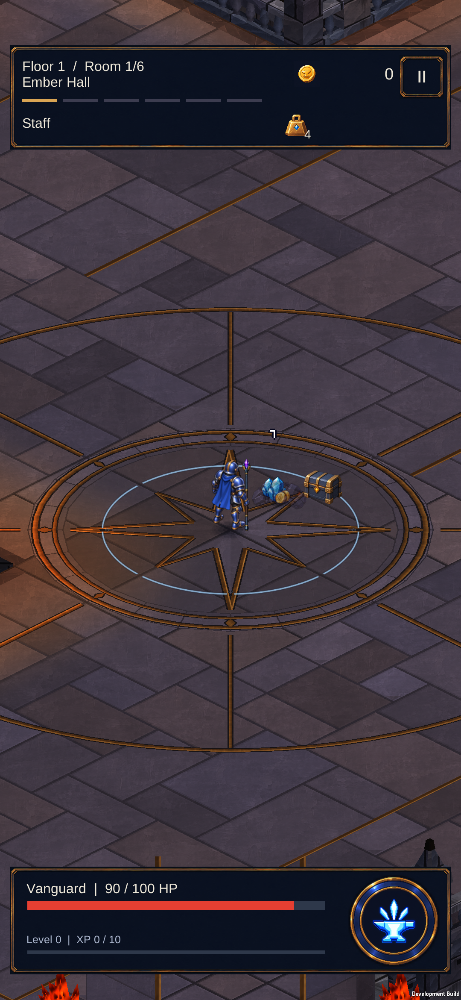
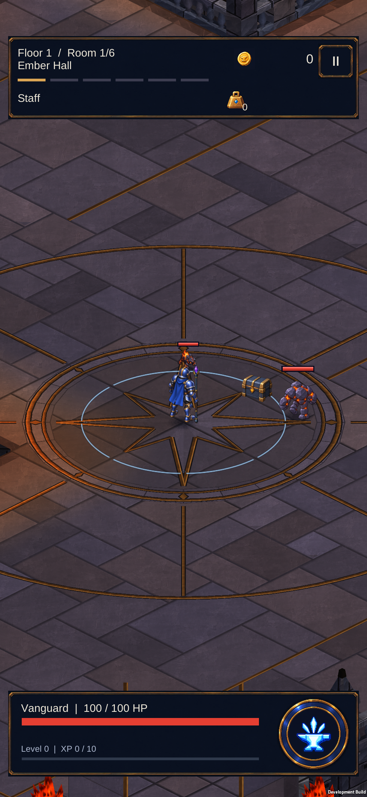

Dökümhaneye giriş
Telefonda çalışan giriş sunumu: yaklaşık dört saniyelik kapı görünümü, dokunarak atlama ve ilk dalgaya dönüş. Aşağıdakiler gerçek cihaz görüntüleridir.

Kapı sunumu · HUD geçici olarak gizli
Doğal bitiş · kamera ve savaş geri döndü
Dokunarak atlama · yetenek hazır kaldı410 EditMode + 143 PlayMode testi geçti. Geliştirme haritasında isteğe bağlı giriş sunumu; boss geçişi henüz bu paketin parçası değil.
Teknik doğrulama notları